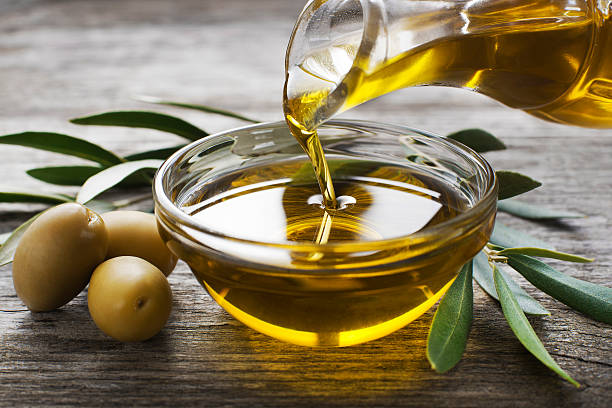

Sauce Preparation
2 cups of tomato sauce

3 cloves garlic, minced
1 large onion, chopped
2 tbsp olive oil
1 tbsp mixed herbs (basil, oregano, parsley)
- Heat olive oil in a pan over medium heat.
- Add minced garlic and chopped onion, sauté until translucent.
- Stir in tomato sauce and mixed herbs.
- Simmer for 20 minutes, stirring occasionally.
Cooking the Spaghetti

1 pound spaghetti

4 quarts water

1 tbsp salt
- Bring water to a boil in a large pot.
- Add salt and spaghetti.
- Boil until al dente, about 8-10 minutes.
- Drain and set aside.
Combining and Finishing

Mixing spaghetti with sauce
- Add the drained spaghetti to the sauce.
- Toss well to coat the spaghetti evenly with the sauce.
- Cook together for an additional 2 minutes to meld flavors.
- Serve hot, garnished with grated Parmesan cheese if desired.